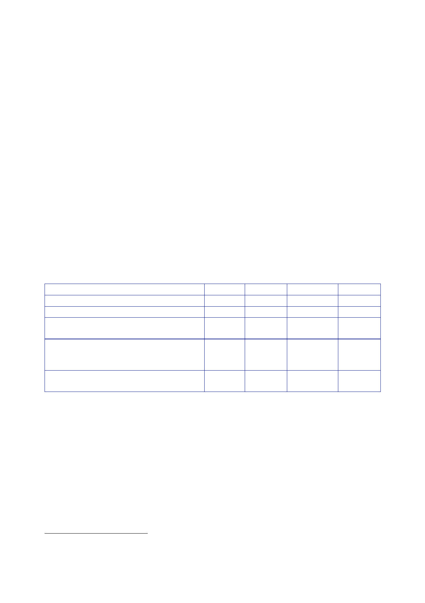

The Report
of the Iraq Inquiry
474.
On
30 May, a list of all the equipment capability UORs approved
for the
pre‑deployment
and invasion phases was produced with an analysis of how they
did
or did not
address equipment capability gaps.231
It sought
to determine where UOR
activity
was focused, “both in terms of the capability delivered and also in
terms of the
relationship
between UORs and the Equipment Programme”.
475.
The capability
shortfalls addressed by UORs were:
•
network-enabled
capability 31%;
•
force
protection 19%;
•
force
projection 12%;
•
counter-terrorism/Special
Forces 7%;
•
precision
strike 3%; and
•
other
27%.
476.
A breakdown of
the UORs in terms of the relationship with capabilities
being
delivered
in the Equipment Programme (EP) showed:
Category of
UOR
UORs to
meet TELIC-specific requirements
UORs to
fill a gap not previously identified
UORs to
bring forward capability already in
the EP
UORs
providing a “patch” solution to bridge
a gap until
the introduction of an EP-funded
solution
UORs to
fill a previously identified capability gap
not funded
in the EP
Number
21
22
22
55
63
UOR
cost
£28.6m
£28.8m
% by
number
11.5%
12%
% by
cost
6%
6%
£138.5m
12%
27%
£154.9m
30%
31%
£149.3m
34.5%
30%
477.
A footnote set
out that not all UORs “fell neatly into one of the
categories
and a
degree of judgement was therefore required”. The example provided
was of
desertisation
measures for the Challenger 2 vehicles: “it was categorised as an
EP
bring-forward
but could equally have been classed as a TELIC-specific
requirement”.
231
Minute DEP
and DCRS to DNO, 30 May 2003, ‘Op TELIC UORs from DEP and
DCRS’.
76